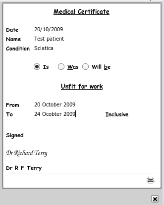

Write a Medical Certificate
Typeing the keyword .mc (a fullstop followed by the letters .mc) will popup a medical certificate for you
to fill in. Closing the popup will print the certificate and it will also be saved to the database.

If you access the main medical certificates section you may see all the particular patients certificates. This is
usually accessed via the section list combo box on the main toolbar. See
The Section List